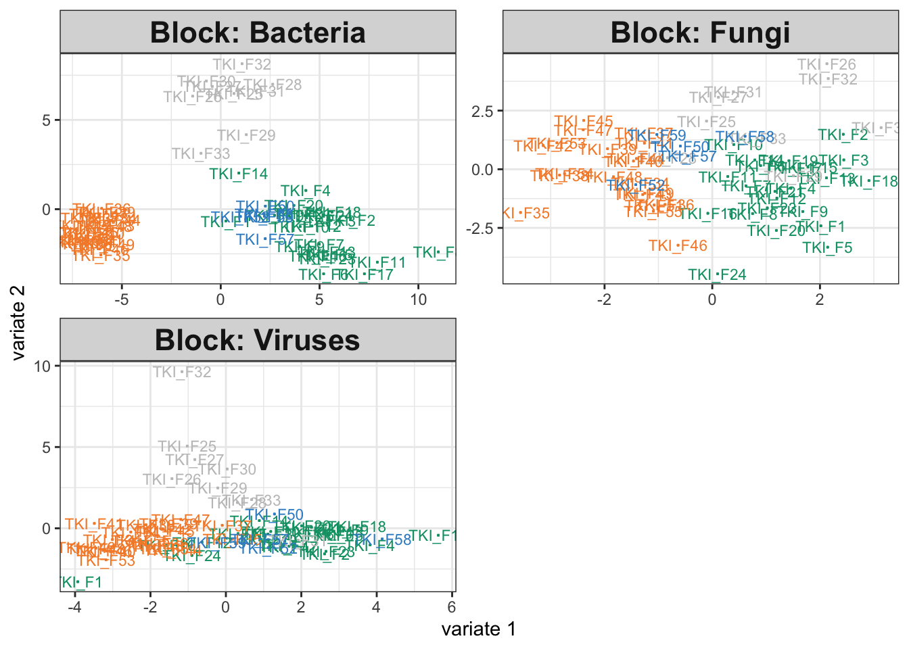

Chapter 6 Vertical Integration
In horizontal integration, we have many datasets, all with the same features. They only differ because they were gathered at different times. In contrast, for vertical integration, we instead have many datasets all with the same samples. They differ because they measure different aspects of those samples. Our goal in this situation is not to remove differences across datasets, like it was in horizontal integration, but instead to clarify the relationships across sources.
One important question that often arises in vertical integration is – are the data even alignable? That is, in our effort to look for relationships across datasets, we might accidentally miss out on interesting variation that exists within the individual assays. If the technologies are measuring very different things, we might be better off simply analyzing the data separately. To help us gauge which setting we might be in, we can simulate data where we know that we shouldn’t align the sources. If our integration methods are giving similar outputs as they give on this simulated data, then we should be more cautious.
There are a few ways in which a dataset might not be ``alignable.’’ The most general reason is that there may be no latent sources of variation in common between the sources. A simpler reason is that something that influenced one assay substantially (e.g., disease state) might not influence the other by much. Let’s see how an integration method might work in this setting.
6.1 ICU Dataset
We’ll work with the ICU sepsis dataset previously studied by Haak et al. (2021) and documented within a vignette for the MOFA package. The three datasets here are 16S bacterial, ITS fungal, and Virome assays, all applied to different healthy and sepsis patient populations. Moreover, some participants were on a course of antibiotics while others were not. The question is how either sepsis, antibiotics, or their interaction affects the microbiome viewed through these three assays. The data are printed below, they have already been filtered and CLR transformed following the MOFA vignette.
## $Bacteria
## class: SummarizedExperiment
## dim: 180 57
## metadata(0):
## assays(1): clr
## rownames(180): Acidaminococcus Actinomyces ... Veillonellaceae Weissella
## rowData names(0):
## colnames(57): TKI_F1 TKI_F10 ... TKI_F8 TKI_F9
## colData names(16): Age Sexs ... Propionate Butyrate
##
## $Fungi
## class: SummarizedExperiment
## dim: 18 57
## metadata(0):
## assays(1): clr
## rownames(18): Agaricus Aspergillus ... Sclerotiniaceae Vishniacozyma
## rowData names(0):
## colnames(57): TKI_F1 TKI_F10 ... TKI_F8 TKI_F9
## colData names(16): Age Sexs ... Propionate Butyrate
##
## $Viruses
## class: SummarizedExperiment
## dim: 42 57
## metadata(0):
## assays(1): clr
## rownames(42): Acidovorax phage Acinetobacter phage ... Streptomyces phage Vibrio phage
## rowData names(0):
## colnames(57): TKI_F1 TKI_F10 ... TKI_F8 TKI_F9
## colData names(16): Age Sexs ... Propionate ButyrateWe can simultaneously analyze these data sources using block sPLS-DA. This is
the multi-assay version of the analysis that we saw in the previous session.
exper_splsda is a very light wrapper of a mixOmics function call, which you
can read
here.
The output plot below shows that each assay differs across groups, and this is
quantitatively summarized by the high estimated weights between each category
and the estimated PLS directions.

## comp1 comp2
## Bacteria 0.8580402 0.8191458
## Fungi 0.6513668 0.4845247
## Viruses 0.6118091 0.80470676.2 Interlude: Using map
In the examples below, we’ll find it helpful to use the function map in the
purrr package. This function gives a one-line replacement for simple for-loops;
it is analogous to list comprehensions in python. It can be useful many places
besides the topic of this tutorial. For example, if we want to convert the
vector c(1, 2, 3) into c(1, 4, 9), we can use this map:
## [[1]]
## [1] 1
##
## [[2]]
## [1] 4
##
## [[3]]
## [1] 9The ~ notation is shorthand for defining a function, and the . represents
the current vector element. More generally, we can apply map to lists. This
line will update the list so that 1 is added to each element.
## $a
## [1] 2
##
## $b
## [1] 3
##
## $c
## [1] 4Exercise: To test your understanding, can you write a map that computes the
*mean for each
vector in the list x below? What about the mean of the 10 smallest elements?
6.3 Simulation Question
How would the output have looked if 16S community composition had not been related to disease or antibiotics groups? Since integrative analysis prioritizes similarities across sources, we expect this to mask some of the real differences in the fungal and virus data as well. We can use simulation to gauge the extent of this masking.
Our first step is to train a simulator. We’re just learning four different
setes of parameters for each of the four observed groups. This is not as nuanced
as learning separate effects for sepsis and antibiotics, but it will be enough
for illustration. We have used map to estimate a simulator for each assay in
the icu list.
So far, we haven’t tried removing any relationships present in the 16S assay, and indeed our integrative analysis output on the simulated data looks comparable to that from the original study.
icu_sim <- join_copula(simulator, copula_adaptive()) |>
sample() |>
split_assays()
fit_sim <- exper_splsda(icu_sim)
plotIndiv(fit_sim)
## comp1 comp2
## Bacteria 0.8580402 0.8191458
## Fungi 0.6513668 0.4845247
## Viruses 0.6118091 0.8047067Exercise: Modify the simulator above so that the 16S group no longer depends on disease cateogry. This will allow us to study how the integrative analysis output changes when the data are not alignable.
Solution: We need to define a new link that no longer depends on Category. One solution
is to modify the existing simulator in place using mutate.
Since we are modifying all taxa, a simpler solution is to just define a new simulator from scratch.
6.4 Simulation Results
We can rerun the integrative analysis using the modified simulator. Somewhat surprisingly, the disease association in the bacteria group hasn’t been erased. This is an artifact of the integration. The other assays have associations with disease group, and since the method encourages outputs across tables to be consistent with one another, we have artificially introduced some structure into the bacteria visualization (even if it is quite weak.) Nonetheless, we still observe a large dropoff in weight for the bacterial table. Further, there seems to be a minor deterioration in the group separations for the fungal and virus communities, and the component weights are higher when we work with only the fungal and virus assays. Altogether, this suggests that we may want to check table-level associations with the response variable, especially if any of the integration outputs are ambiguous. In this case, we might be able to increase power by focusing only on class-associated assays. Nonetheless, the block sPLS-DA also seems relatively robust – considering the dramatic change in the microbiome table, the output for the remaining tables still surfaces interesting relationships.
icu_sim <- join_copula(null_simulator, copula_adaptive()) |>
sample() |>
split_assays()
fit_null <- exper_splsda(icu_sim)
plotIndiv(fit)
## comp1 comp2
## Bacteria 0.5886651 0.6873822
## Fungi 0.7647532 0.6900530
## Viruses 0.6284801 0.7759833


6.5 Alignability
How do the canonical correlations compare between the real data and a reference null? First, we can compute the CCA canonical correlations using the real Bacteria and Virus data.
merged <- simulator[c(1, 3)] |>
join_copula(copula_adaptive(thr = 0.01))
xy <- sample(merged) |>
assay() |>
t()
ix <- map(icu, rownames)
cca_result <- rcc(xy[, ix[[1]]], xy[, ix[[3]]], method = "shrinkage")Next, we define a reference null and compute canonical correlations on ten replicates from this null. To define the reference null, we zero out any correlations across tables. We then draw 100 samples from the resulting distribution and compute canonical correlations for each.
rho_null <- copula_parameters(merged)
dimnames(rho_null) <- list(colnames(xy), colnames(xy))
rho_null[ix[[1]], ix[[3]]] <- 0
rho_null[ix[[3]], ix[[1]]] <- 0
null_cancor <- merged |>
mutate_correlation(rho_null)
B <- 100
cancors <- list()
for (b in seq_len(B)) {
xy_null <- sample(null_cancor) |>
assay() |>
t()
cancors[[glue("sim_{b}")]] <- rcc(xy_null[, ix[[1]]], xy_null[, ix[[3]]], method = "shrinkage")$cor
}To help with later visualization, we combine both the real and reference canonical correlations into a tidy data.frame. These are visualized in a hidden chunk below – if you want to see the source code, you can review it here.
cancors[["true"]] <- cca_result$cor
contrast_data <- bind_rows(cancors, .id = "rep") |>
pivot_longer(-rep, names_to = "loading") |>
mutate(
source = grepl("true", rep),
loading = as.integer(loading)
)
head(contrast_data)## # A tibble: 6 × 4
## rep loading value source
## <chr> <int> <dbl> <lgl>
## 1 sim_1 1 0.885 FALSE
## 2 sim_1 2 0.869 FALSE
## 3 sim_1 3 0.840 FALSE
## 4 sim_1 4 0.828 FALSE
## 5 sim_1 5 0.823 FALSE
## 6 sim_1 6 0.809 FALSE
## R version 4.4.0 (2024-04-24)
## Platform: aarch64-apple-darwin20
## Running under: macOS Ventura 13.4
##
## Matrix products: default
## BLAS: /Library/Frameworks/R.framework/Versions/4.4-arm64/Resources/lib/libRblas.0.dylib
## LAPACK: /Library/Frameworks/R.framework/Versions/4.4-arm64/Resources/lib/libRlapack.dylib; LAPACK version 3.12.0
##
## locale:
## [1] en_US.UTF-8/en_US.UTF-8/en_US.UTF-8/C/en_US.UTF-8/en_US.UTF-8
##
## time zone: Australia/Melbourne
## tzcode source: internal
##
## attached base packages:
## [1] splines parallel stats4 stats graphics grDevices utils datasets methods base
##
## other attached packages:
## [1] lubridate_1.9.3 stringr_1.5.1 readr_2.1.5 tidyverse_2.0.0
## [5] RefManageR_1.4.0 knitr_1.47 TreeSummarizedExperiment_2.12.0 Biostrings_2.72.1
## [9] XVector_0.44.0 SingleCellExperiment_1.26.0 scDesigner_0.0.0.9000 purrr_1.0.2
## [13] MIGsim_0.0.0.9000 tidyr_1.3.1 tibble_3.2.1 scico_1.5.0
## [17] patchwork_1.2.0 mixOmics_6.28.0 lattice_0.22-6 MASS_7.3-60.2
## [21] glue_1.7.0 ggplot2_3.5.1 ggdist_3.3.2 gamboostLSS_2.0-7
## [25] mboost_2.9-10 stabs_0.6-4 forcats_1.0.0 dplyr_1.1.4
## [29] SummarizedExperiment_1.34.0 Biobase_2.64.0 GenomicRanges_1.56.0 GenomeInfoDb_1.40.0
## [33] IRanges_2.38.0 S4Vectors_0.42.0 BiocGenerics_0.50.0 MatrixGenerics_1.16.0
## [37] matrixStats_1.3.0 SpiecEasi_1.1.3 CovTools_0.5.4
##
## loaded via a namespace (and not attached):
## [1] minpack.lm_1.2-4 rpart_4.1.23 lifecycle_1.0.4 Rdpack_2.6
## [5] edgeR_4.2.0 doParallel_1.0.17 MultiAssayExperiment_1.30.2 insight_0.20.1
## [9] backports_1.5.0 magrittr_2.0.3 limma_3.60.2 sass_0.4.9
## [13] rmarkdown_2.27 jquerylib_0.1.4 yaml_2.3.8 RColorBrewer_1.1-3
## [17] ADGofTest_0.3 abind_1.4-5 zlibbioc_1.50.0 expm_0.999-9
## [21] quadprog_1.5-8 pspline_1.0-20 kde1d_1.0.7 rgl_1.3.1
## [25] yulab.utils_0.1.4 pracma_2.4.4 GenomeInfoDbData_1.2.12 ggrepel_0.9.5
## [29] tidytree_0.4.6 ellipse_0.5.0 RSpectra_0.16-1 codetools_0.2-20
## [33] DelayedArray_0.30.1 xml2_1.3.6 shapes_1.2.7 tidyselect_1.2.1
## [37] shape_1.4.6.1 UCSC.utils_1.0.0 farver_2.1.2 randtoolbox_2.0.4
## [41] base64enc_0.1-3 jsonlite_1.8.8 Formula_1.2-5 survival_3.7-0
## [45] iterators_1.0.14 systemfonts_1.1.0 foreach_1.5.2 tools_4.4.0
## [49] progress_1.2.3 ragg_1.3.2 treeio_1.28.0 Rcpp_1.0.12
## [53] rARPACK_0.11-0 BiocBaseUtils_1.6.0 gridExtra_2.3 SparseArray_1.4.8
## [57] xfun_0.44 distributional_0.4.0 withr_3.0.0 numDeriv_2016.8-1.1
## [61] fastmap_1.2.0 fansi_1.0.6 digest_0.6.35 timechange_0.3.0
## [65] R6_2.5.1 textshaping_0.4.0 colorspace_2.1-0 inum_1.0-5
## [69] copula_1.1-3 flare_1.7.0.1 utf8_1.2.4 generics_0.1.3
## [73] corpcor_1.6.10 prettyunits_1.2.0 pulsar_0.3.11 httr_1.4.7
## [77] htmlwidgets_1.6.4 S4Arrays_1.4.1 scatterplot3d_0.3-44 rngWELL_0.10-9
## [81] pkgconfig_2.0.3 geigen_2.3 gtable_0.3.5 pcaPP_2.0-4
## [85] htmltools_0.5.8.1 bookdown_0.39.1 scales_1.3.0 SHT_0.1.8
## [89] rstudioapi_0.16.0 tzdb_0.4.0 reshape2_1.4.4 nlme_3.1-164
## [93] cachem_1.1.0 libcoin_1.0-10 pillar_1.9.0 grid_4.4.0
## [97] vctrs_0.6.5 VGAM_1.1-11 huge_1.3.5 gamlss.dist_6.1-1
## [101] evaluate_0.23 mvtnorm_1.2-5 cli_3.6.2 locfit_1.5-9.9
## [105] compiler_4.4.0 rlang_1.1.4 crayon_1.5.2 labeling_0.4.3
## [109] plyr_1.8.9 fs_1.6.4 stringi_1.8.4 BiocParallel_1.38.0
## [113] nnls_1.5 assertthat_0.2.1 rvinecopulib_0.6.3.1.1 munsell_0.5.1
## [117] gsl_2.1-8 lazyeval_0.2.2 glmnet_4.1-8 Matrix_1.7-0
## [121] hms_1.1.3 stabledist_0.7-1 statmod_1.5.0 highr_0.11
## [125] rbibutils_2.2.16 partykit_1.2-20 igraph_2.0.3 memoise_2.0.1
## [129] bslib_0.7.0.9000 bibtex_0.5.1 ape_5.8